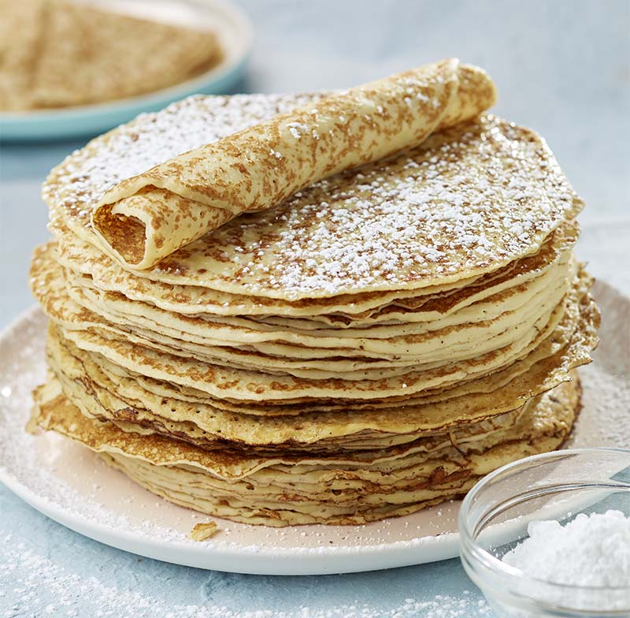

Pannenkoeken
Quatre quart
Pannenkoeken
Amerikaanse cookies

Ingrediënten
120 g bloem
3 soeplepels suiker
25 g boter
2 eieren
1 zakje vanillesuiker
260 ml melk
Bereiding
- Voeg alle droge ingrediënten samen. Plaats de bloem, de suiker en de vanillesuiker in een kom.
- Klop de melk en de eieren samen tot dat ze allebei goed gemengd zijn.
- Voeg langzaam jouw ei-melkmengsel aan de droge ingrediënten. Let op dat er geen klontjes in jouw deeg zijn.
- Laat de boter smelten en voeg deze aan jouw mengsel.
- Bak jouw pannenkoeken tot ze een goudbruine kleur krijgen.